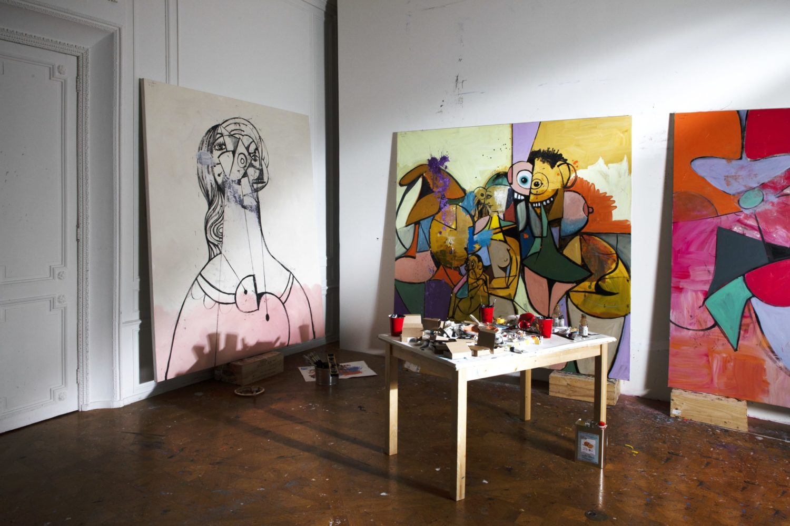
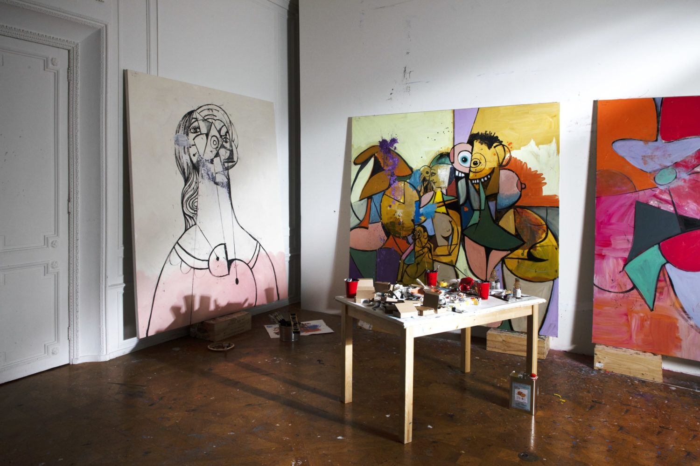

“My painting is all about this interchangeability of languages in art, where one second you might feel the background has the shading and tonalities you would see in a Rembrandt portrait, but the subject is completely different and painted like some low-culture, transgressive mutation of a comic strip”
PAINTER. PRINTMAKER.
SCULPTOR. ILLUSTRATOR.
George Condo was born on December 10, 1957 in Concord, New Hampshire, United States.
He studied art history and music theory at the University of Massachusetts Lowell. Throughout his early life,
he studied guitar and music composition while purusing his lifelong interesting in painting and drawing. After two years at
UMass Lowell, he moved to Boston, where he worked in a silk screen shop and joined the proto-synth/punk band "The Girls" as a bassist.
Condo met artist Jean-Michel Basquiat
in 1979 when Basquit's band, Gray, opened for the Girls at the dowontown nightclub Tier 3. Aftet this meeting,
Condo moved to Ludlow Street in New York City to pursue his career as an artist. From there, he began working as a
printer for Andy Warhol and spent a year studying Old Master glazing techniques in Los Angeles.
George Condo exhibited his first works at the East Village Gallery in New York
in the year of 1981. The following year, he had his first solo exhibition in Los Angeles at the Ulrike Kantor
Gallery. His exhibitions were a huge hit, and he gradually captivated the world around him and became a global artist.
Condo's artworks have a distinctive, deformed, and sometimes demonic style that combine figuration and abstraction. This
unique style was given the term "Artificial Realism" by Condo in the late 1980's, which aims to emphasize the construction
of images rather than their representation of reality.
As of 2024, George Condo resides and works in New York City, United States. He continues to modernize artistic traiditons
with the inspirations of artists such as Picasso, Arcimboldo, or Manet, and mixes cubism, classicism, and expressionism to create modern paintings.
He is also known for various collaborations with world-wide superstars such as Kanye West and Travis Scott. Over the course of 25 years, Condo participated in 134 solo exhibitions all over the world, primarily in the United States and various
countries in Europe. Through his numerous awards, publications, and exhibitions, George Condo continues to exemplify his impact and importance
in the art industry.
 
